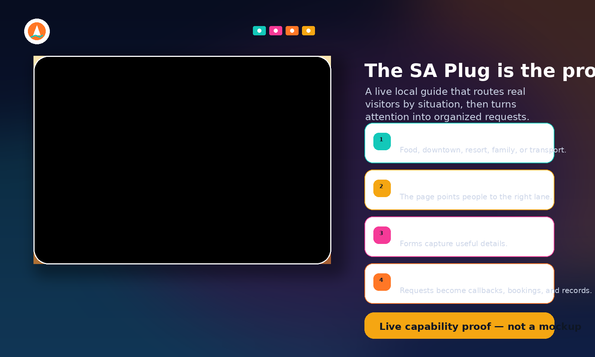

Restaurants
Visitor discovery, group dining, catering, private events, QR paths, content rhythm.
Two paths: Restaurant Partner Program visibility or AI Restaurant Growth Systems.
Built by The AI Plug
THE AI PLUG · HOSPITALITY + LOCAL EXPERIENCE
The businesses that learn AI now will have the advantage later.
The AI Plug helps hospitality businesses use AI across visitor discovery, content, event inquiries, QR paths, customer questions, private parties, group requests, follow-up, and internal workflows — so your team can move faster without replacing the guest experience.
WHY NOW
Visitors decide quickly. They discover you through search, social, QR codes, hotel recommendations, and word of mouth. AI can support local SEO, event campaigns, short-form content, social rhythm, customer questions, private event intake, and follow-up — without unsupervised customer-facing automation.
The goal is not to replace your team at the host stand or on the floor. The goal is to help your business publish consistently, answer guests better, automate safely, and build future-ready workflows around how hospitality actually works.
Local SEO, Google visibility, and content that helps the right guests find you.
Approved answers for hours, parking, groups, menus, events, and dress code.
Private parties, catering, and table requests with useful details upfront.
Social content, short-form video, and campaigns that stay consistent.
PRACTICAL AI
How hospitality businesses can move faster with AI across marketing, guest experience, intake, automation, and internal assistant support.
Help guests find you when they search by area, occasion, or timing.
Promotions, private event pages, and campaign paths when they fit.
Consistent publishing without starting from scratch every week.
Table cards, menus, and signage that lead to useful next steps.
Approved answer libraries with human handoff for sensitive requests.
Website operator planning for repeat guest and visitor questions.
Date, guest count, budget, package interest, and contact details upfront.
Keep group, event, and catering opportunities from going quiet.
Help with event inquiries, content drafts, and guest question summaries.
Practical views of inquiries, status, and what needs action.
AI MARKETING SYSTEMS
The AI Plug can support hospitality marketing with local SEO, Google visibility, paid social when appropriate, event campaigns, private event landing pages, short-form video, social content rhythm, QR campaigns, hotel/resort outreach paths, and seasonal promotions — then connect that attention to guest questions, group/table inquiries, and follow-up workflows.
Paid social and campaign paths belong inside a larger practical AI adoption plan — not as a standalone ad pitch. We do not promise guaranteed traffic, reservations, revenue, rankings, or ad ROI.
GUEST EXPERIENCE
AI concierge planning, approved answer libraries, and guest question paths help your team answer repeat questions faster — with human approval and clear escalation when judgment matters.
Hours, parking, groups, menus, reservations, events, and dress code.
Website paths for visitor and repeat guest questions.
Organize table, catering, and event inquiries with useful details.
Sensitive requests and high-value events stay with your team.
AUTOMATION + ASSISTANTS
Follow-up workflows, event inquiry summaries, content drafts, and daily briefs help managers and owners move faster on repeatable work — without replacing front-of-house judgment.
Summaries and next-step reminders for private parties and groups.
Event promos, menu highlights, and short-form content support.
Alerts and workflows so good opportunities do not go quiet.
Internal assistant support for repeat inquiry patterns.
Workflow planning for reviews and return visits — not guaranteed outcomes.
See what came in, what needs follow-up, and what deserves attention.
SMART INTAKE
When DMs, calls, QR scans, and event requests scatter, good opportunities disappear. Smart intake helps capture interest type, timing, guest count, and contact preference — as part of a larger AI adoption strategy for hospitality.

BY BUSINESS TYPE
Restaurants have a dedicated page inside the Where To Go SA ecosystem. Other hospitality and local experience businesses start here.
Visitor discovery, group dining, catering, private events, QR paths, content rhythm.
Two paths: Restaurant Partner Program visibility or AI Restaurant Growth Systems.
Weekend traffic, DMs, event nights, table and group questions, private parties.
Paid social when appropriate, content rhythm, guest questions, and follow-up.
Groups, special occasions, dress code, reservation questions, private events.
Local SEO, approved FAQs, group intake, and AI concierge planning.
Date, guest count, budget, package interest, vendor needs, proposal follow-up.
Event landing pages, intake, content, and follow-up workflows.
Hours, pricing, group needs, parking, route timing, age fit.
Visitor question planning, content, and group inquiry organization.
Nearby visitor confidence, timing, transportation questions, QR and social interest.
Campaign paths, guest questions, intake, and follow-up support.
Find the smartest first place to use AI — discovery, content, guest questions, events, or follow-up.
Request AI reviewCapture date, guest count, package interest, and contact details before the first conversation.
Start with event intakeConnect menus, table cards, and promotions to useful guest next steps.
Start with QR paths
LIVE PROOF
Visitors choose by situation — dinner, downtown plans, resort stays, family routes. The same thinking helps hospitality businesses build clearer paths from attention to inquiry, content, and follow-up.
TRUST + GUARDRAILS
The AI Plug does not promise guaranteed reservations, bookings, traffic, revenue, rankings, reviews, QR scans, leads, or results. Customer-facing answers are approved. Staff stays in control.
Nothing customer-facing goes live without your sign-off.
AI supports your team on the floor and in the office.
No promised reservations, traffic, revenue, rankings, or ad ROI.
Public visibility opportunities are reviewed for fit with the visitor guide.
One practical system first — then expand as AI adoption earns trust.
REQUEST REVIEW
Tell us your business type and where practical AI could help your team move faster — discovery, content, guest questions, events, QR paths, or follow-up.
Start with discovery, content, guest questions, event campaigns, QR paths, or follow-up — wherever practical AI can help your team move faster first.